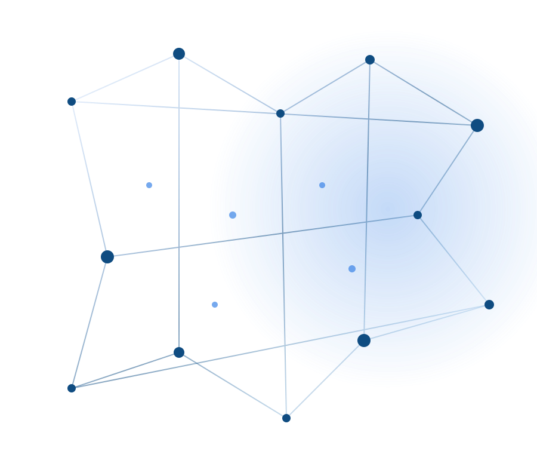

i4MDS CONSORTIUM
i4MDS
Data Access Portal
Controlled access to multi-omics datasets generated by the i4MDS Consortium.
ABOUT THE PORTAL
Enabling responsible access to consortium data
The i4MDS Data Access Portal provides controlled access to multi-omics datasets generated within the consortium. Researchers can explore available datasets and submit a project proposal for review by the Data Access Committee.
25
Datasets
843
Samples
15
Omics technologies
10+
Institutions
DATA LANDSCAPE
Multi-omics across multiple biological layers
The portal brings together datasets generated using complementary genomic, transcriptomic, epigenomic, single-cell and molecular approaches.
RNA-seq
DNA-seq
WGS
WES
ATAC-seq
ChIP-seq
scRNA-seq
scATAC-seq
CITE-seq
Hyperion
Flow cytometry
Metabolomics
COLLABORATIVE RESEARCH
Interested in using i4MDS data?
Explore the available datasets or submit a research proposal to request access.